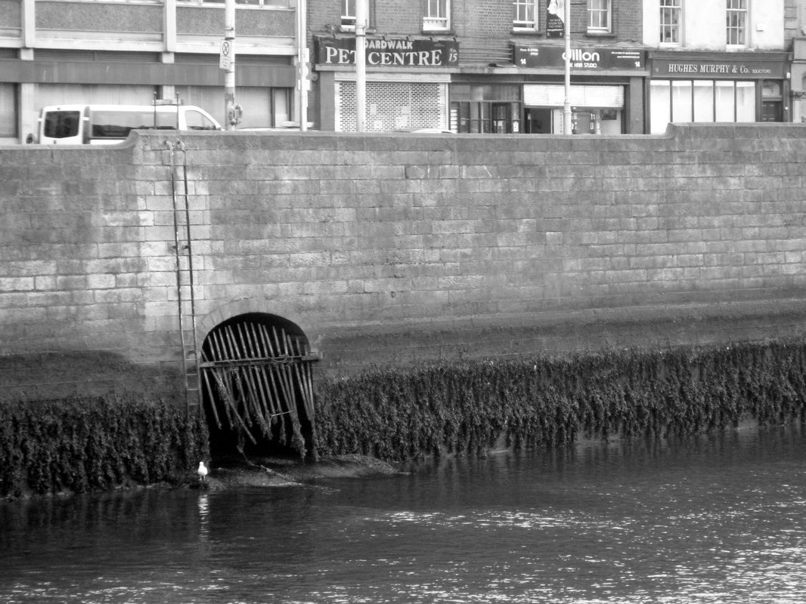
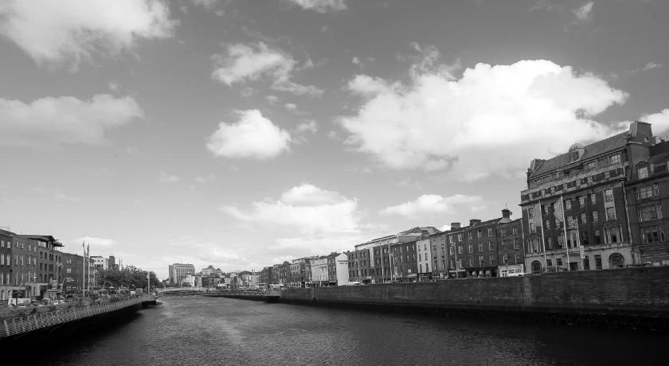
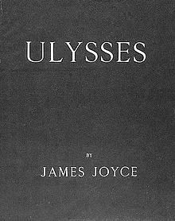

Stop 16 of 16 · Wellington Quay
Liffey Outfall
Journey’s end, under Wellington Quay.
The outfall
The Poddle’s journey ends here, flowing out under Wellington Quay into the Liffey through a grating in the quay wall. The Liffey is tidal here, so at high tide the grating disappears under the water.
Wellington Quay
Wellington Quay was the last of the Liffey quays to be built. It is named after the Dublin-born Arthur Wellesley, 1st Duke of Wellington, after his victory over Napoleon at Waterloo.
Ulysses
In James Joyce’s Ulysses the outfall is placed, wrongly, at Wood Quay, in words that are unflattering but memorable:
“From its sluice in Wood quay wall under Tom Devan’s office Poddle river hung out in fealty a tongue of liquid sewage.”
At low tide
The flood scheme’s planning report says the meeting of the Poddle and the Liffey is visible at low tide, at a grated opening in the Liffey walls at Wellington Quay.
Before it gets there the river crosses under the Grand Canal and flows under the city centre in a culverted section. A Dublin City Council area report describes the route as running through Tymon Park, Harold’s Cross and Blackpitts to the outfall at Wellington Quay.
From the planning file
Facts from the flood scheme’s planning application and four local planning files.


